<title>Craters Under Fire</title>
<meta name="claude:viewport-fit-sides" content="cover">
<link rel="preconnect" href="https://fonts.googleapis.com">
<link rel="stylesheet" href="https://fonts.googleapis.com/css2?family=Inter:wght@400;600&family=Space+Grotesk:wght@500;700&display=swap">
<style>
/* One reading column. Each row is one game moment played twice, without and with craters, side by side: pictures from the engine's own drawing, counts under each. Colours follow the world: mould amber, crystal cyan. */
:root {
  --bg: #f3f5f6; --fg: #182024; --muted: #56646b; --line: #d5dde0;
  --panel: #ffffff; --amber: #a86a12; --cyan: #127a93; --win: #2f7d4a; --loss: #a8402c;
  --display: "Space Grotesk", "Segoe UI", system-ui, sans-serif;
  --body: "Inter", "Segoe UI", system-ui, sans-serif;
}
@media (prefers-color-scheme: dark) { :root:not([data-theme="light"]) {
  --bg: #0b1114; --fg: #e3eaec; --muted: #93a3aa; --line: #22303a;
  --panel: #111a1f; --amber: #e2a95a; --cyan: #8cebff; --win: #7fd19a; --loss: #f0937e; color-scheme: dark } }
:root[data-theme="dark"] {
  --bg: #0b1114; --fg: #e3eaec; --muted: #93a3aa; --line: #22303a;
  --panel: #111a1f; --amber: #e2a95a; --cyan: #8cebff; --win: #7fd19a; --loss: #f0937e; color-scheme: dark }
body { background: var(--bg); color: var(--fg); font-family: var(--body); line-height: 1.55;
  padding-left: max(16px, env(safe-area-inset-left, 0px)); padding-right: max(16px, env(safe-area-inset-right, 0px)); padding-block: 28px 48px; }
main { max-width: 1060px; margin: 0 auto; display: grid; gap: 40px; }
h1, h2 { font-family: var(--display); text-wrap: balance; margin: 0; }
h1 { font-size: 1.9rem; }
h2 { font-size: 1.3rem; }
p { margin: 0; max-width: 68ch; }
.lede { color: var(--muted); }
section { display: grid; gap: 14px; }
.pair { display: grid; grid-template-columns: repeat(2, 1fr); gap: 12px; }
.strip { display: grid; grid-template-columns: 7.5rem repeat(4, 1fr); gap: 8px; align-items: start; }
.strip .lab { font-family: var(--display); font-size: 0.8rem; letter-spacing: 0.06em; text-transform: uppercase; color: var(--muted); padding-top: 4px; }
.strip .lab.on { color: var(--amber); }
.strip3 { grid-template-columns: 7.5rem repeat(3, 1fr); }
figure { margin: 0; display: grid; gap: 6px; min-width: 0; align-content: start; }
figure video, figure img { width: 100%; border-radius: 4px; border: 1px solid var(--line); display: block; background: #111a1f; }
.counts { font-size: 0.88rem; color: var(--muted); font-variant-numeric: tabular-nums; }
.counts b { color: var(--fg); font-weight: 600; }
.tag { font-family: var(--display); font-size: 0.8rem; letter-spacing: 0.06em; text-transform: uppercase; color: var(--amber); }
.tag.off { color: var(--muted); }
.scroll { overflow-x: auto; }
table { border-collapse: collapse; font-variant-numeric: tabular-nums; font-size: 0.92rem; min-width: 640px; }
th, td { text-align: left; padding: 6px 14px 6px 0; border-bottom: 1px solid var(--line); vertical-align: top; }
th { font-weight: 600; color: var(--muted); font-size: 0.82rem; }
td.w { color: var(--win); font-weight: 600; }
td.l { color: var(--loss); font-weight: 600; }
.note { font-size: 0.9rem; color: var(--muted); border-left: 2px solid var(--line); padding-left: 12px; }
.ask { border: 1px solid var(--line); background: var(--panel); border-radius: 6px; padding: 14px 16px; display: grid; gap: 6px; }
.ask b { font-family: var(--display); }
code { font-size: 0.88em; }
@media (max-width: 760px) {
  .pair { grid-template-columns: 1fr; }
  .strip { grid-template-columns: repeat(2, 1fr); }
  .strip .lab { grid-column: 1 / -1; }
}
</style>
<main>
  <header style="display:grid;gap:10px">
    <h1>Craters under fire</h1>
    <p class="lede">You asked for a group of soldiers firing on the slime to carve a bigger and bigger hole that doesn't refill while they shoot. Now each hit leaves a crater in the simulation. For 10 game seconds, the cells it struck keep only a tenth of their trail each step, so the mould can't refill them. The next shots fly over the empty hole into the body behind it, so steady fire digs in. A walker that wanders into a crater still stops a shot, so the mould can't hide in its own hole. When the shooting stops, the craters run out and the mould grows back over about 10 seconds. Nothing is drawn on top. The hole you see is the trail that isn't there.</p>
    <p class="lede">The earlier try, where the mould turned away from gunfire, made a bigger hole. It also let the random player win by parking on the mould's core, so it stays off. The crater doesn't change where the mould goes anywhere else. The full census says it holds: every plan beats idle and random play on 32 race-world seeds, the Fork and the Rim. The one number to watch is random wiping the mould on 7 of 32 race seeds, against 2 without craters.</p>
  </header>

  <section>
    <h2>In the game window</h2>
    <p>These are pictures from the window, drawn by the GPU engine on the Fork. The "rush" hand sends all four soldiers at the mould's core. Here is the game without craters. The same game with craters, at the same seconds, is in the next section as one of three looks, so that comparison stays blind.</p>
    <div class="strip">
      <span class="lab">no craters</span>
      <figure>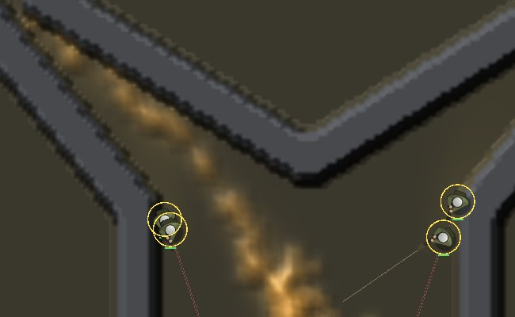<div class="counts">7 s · <b>9</b> killed · 7 shots</div></figure>
      <figure>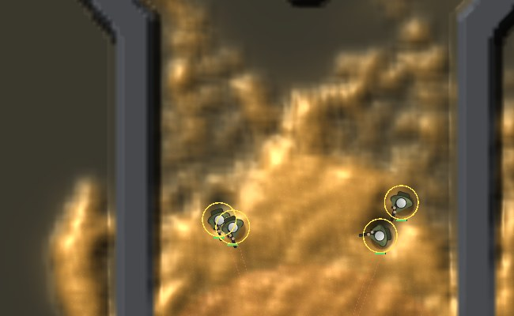<div class="counts">9 s · <b>135</b> killed · 15 shots</div></figure>
      <figure>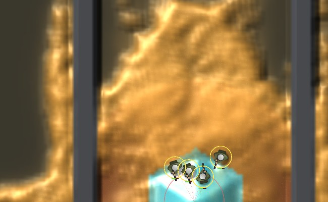<div class="counts">11 s · <b>579</b> killed · 23 shots</div></figure>
      <figure>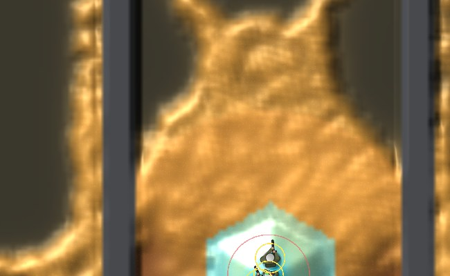<div class="counts">13 s · <b>974</b> killed · mould 4,376</div></figure>
    </div>
    <p class="note">Without craters the mould closes over each hit at once, so the soldiers never get past its edge. With them, each crater is the round disc a hit strikes, so a fresh hole starts round. The red-brown inside the fresh holes is bare ground: this fight is on a disc of clay round the mould's start, and the window draws clay that colour. Holes off the clay, like the older ones higher up, show the grey-olive of ordinary soil. (An earlier version of this page said the colour came from the crystal's scent. That was wrong.) I also tried a ragged edge, with fewer crater steps toward a disc's rim and a random share per cell. It made the holes smaller but no less round, because the trail's spread smooths away anything a single cell does. So it isn't in. If these still read as stamps to you, that's the thing to tell me.</p>
  </section>

  <section>
    <h2>Three ways the hole could look</h2>
    <p>The game designer and the graphics thread both read the round holes above as stamps, so here are three versions of the same rule side by side. Each one is still the simulation, with nothing painted on. One is the crater as it ships. One fires a smaller strike more often, with each shot's aim scattered a little, so a hole is many small bites. One lays the crater strongest in the middle of each strike and weaker toward its edge, and leaves no trail inside, so the edge is soft and the inside drains to bare ground. Which is which is left off this page. The last two are switches and are off until you pick one.</p>
    <p>It's the same game as above, the rush hand on the Fork, seed 1, with the window's pictures taken at 9, 11 and 13 game seconds.</p>
    <div class="strip strip3">
      <span class="lab on">look 1</span>
      <figure>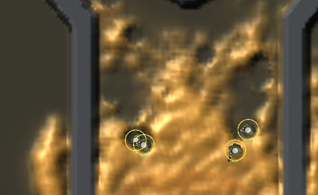<div class="counts">9 s · <b>57</b> killed · 30 shots · mould 4,943</div></figure>
      <figure>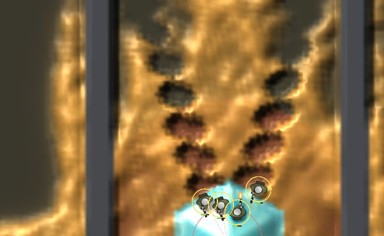<div class="counts">11 s · <b>462</b> killed · 47 shots · mould 4,582</div></figure>
      <figure>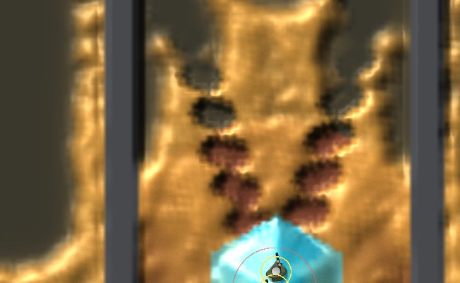<div class="counts">13 s · <b>765</b> killed · 63 shots · mould 4,542</div></figure>
      <span class="lab on">look 2</span>
      <figure>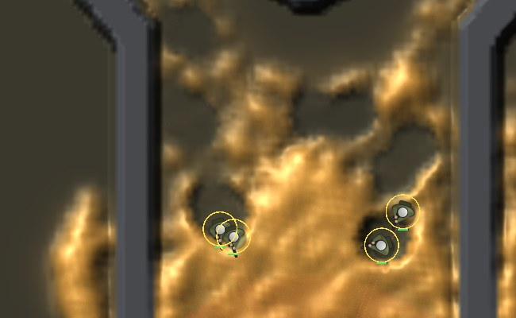<div class="counts">9 s · <b>129</b> killed · 15 shots · mould 4,871</div></figure>
      <figure>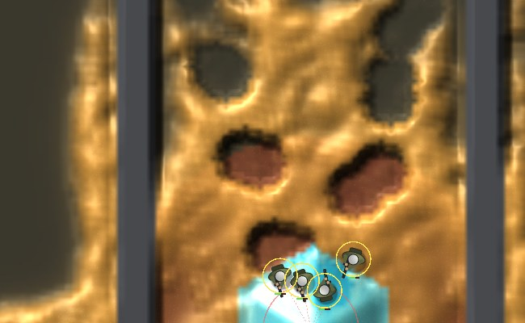<div class="counts">11 s · <b>581</b> killed · 23 shots · mould 4,461</div></figure>
      <figure>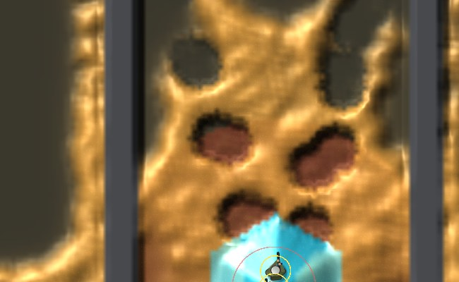<div class="counts">13 s · <b>970</b> killed · 31 shots · mould 4,347</div></figure>
      <span class="lab on">look 3</span>
      <figure>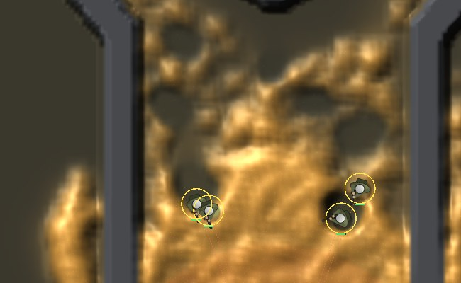<div class="counts">9 s · <b>138</b> killed · 15 shots · mould 4,862</div></figure>
      <figure>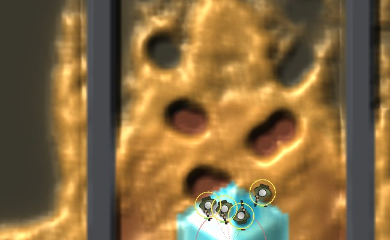<div class="counts">11 s · <b>587</b> killed · 23 shots · mould 4,458</div></figure>
      <figure>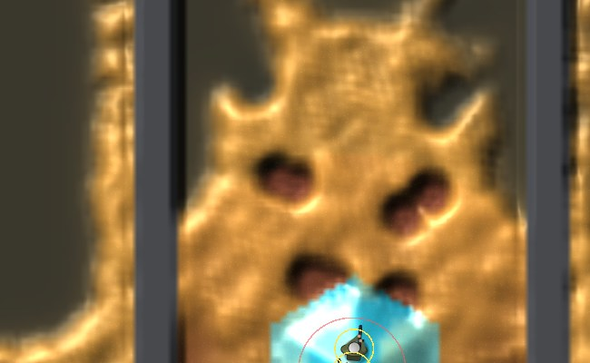<div class="counts">13 s · <b>961</b> killed · 31 shots · mould 4,367</div></figure>
    </div>
    <p>The Fork fight above happens on a disc of clay, which the window draws red-brown, so every fresh hole there shows that colour. Here are the same three looks on plain soil: the race world with no map ground, seed 1, the rush hand, at 20, 23 and 26 seconds. The squad stands on a crystal inside the mould and fires outward.</p>
    <div class="strip strip3">
      <span class="lab on">look 1</span>
      <figure>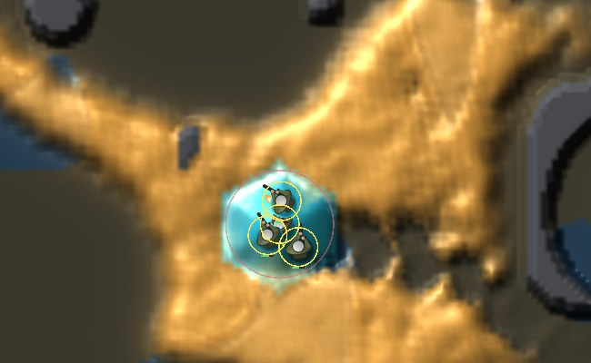<div class="counts">20 s · <b>471</b> killed · 46 shots · mould 2,645</div></figure>
      <figure>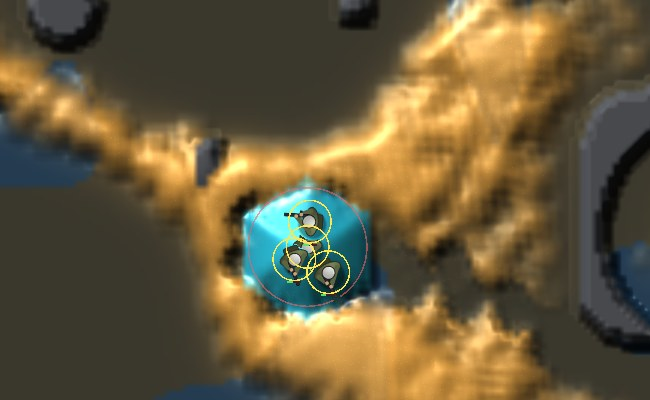<div class="counts">23 s · <b>774</b> killed · 72 shots · mould 1,573</div></figure>
      <figure>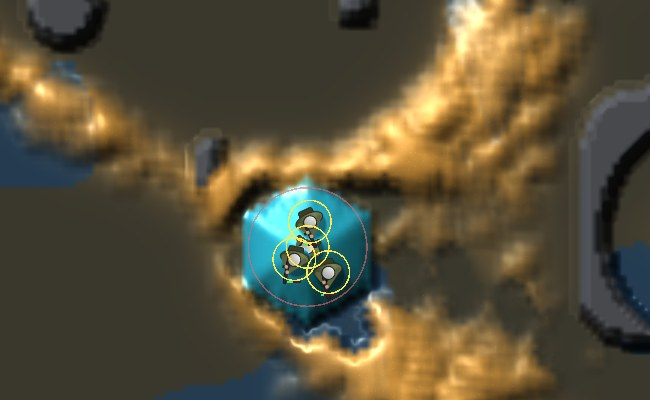<div class="counts">26 s · <b>929</b> killed · 97 shots · mould 1,057</div></figure>
      <span class="lab on">look 2</span>
      <figure>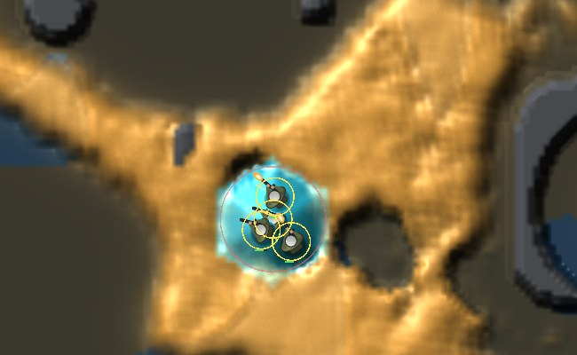<div class="counts">20 s · <b>537</b> killed · 23 shots · mould 2,557</div></figure>
      <figure>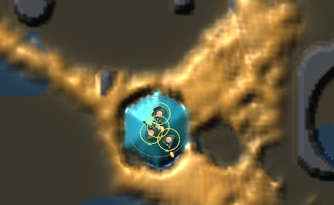<div class="counts">23 s · <b>815</b> killed · 35 shots · mould 1,481</div></figure>
      <figure>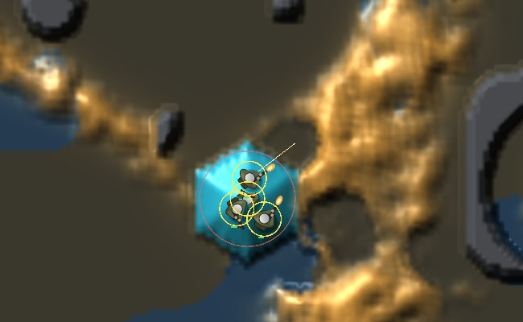<div class="counts">26 s · <b>1,017</b> killed · 47 shots · mould 923</div></figure>
      <span class="lab on">look 3</span>
      <figure>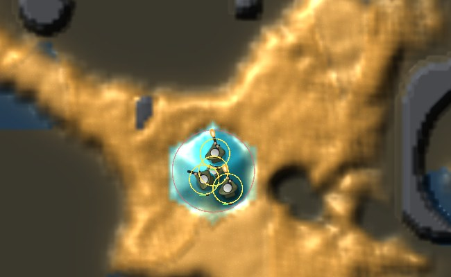<div class="counts">20 s · <b>482</b> killed · 23 shots · mould 2,615</div></figure>
      <figure>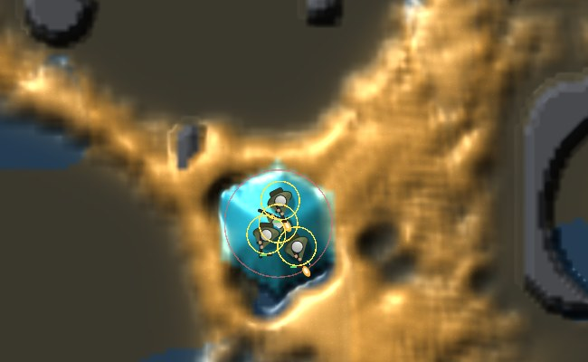<div class="counts">23 s · <b>794</b> killed · 35 shots · mould 1,514</div></figure>
      <figure>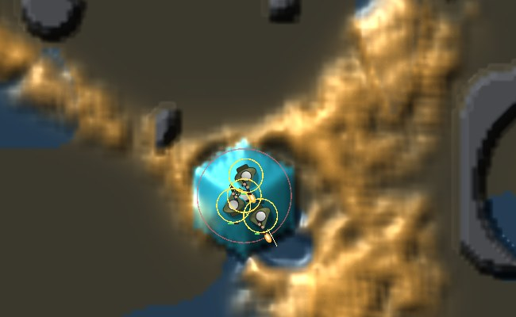<div class="counts">26 s · <b>946</b> killed · 47 shots · mould 1,005</div></figure>
    </div>
    <div class="scroll"><table>
      <tr><th></th><th>hole at 5 / 10 / 20 s of fire</th><th>hits land from the squad</th><th>5 s after the last shot</th><th>killed in 20 s</th><th>soldiers alive</th></tr>
      <tr><td>look 1</td><td>45 / 50 / 56</td><td>5.8 cells</td><td>69% left</td><td>723</td><td>31 of 32</td></tr>
      <tr><td>look 2</td><td>48 / 50 / 60</td><td>5.3 cells</td><td>79% left</td><td>741</td><td>32 of 32</td></tr>
      <tr><td>look 3</td><td>48 / 52 / 54</td><td>6.1 cells</td><td>74% left</td><td>702</td><td>32 of 32</td></tr>
    </table></div>
    <p class="note">These are medians over the 8 hole-test games (seeds 1-8, as in the table further down), played with the rule that a walker standing in a crater stops a shot. Paired seed by seed, none of the three differs from another by more than chance at 20 s, so the choice is about the look, not the fight. With no craters the hole is 29 cells. The scattered version's fire rate was set so it kills about as many walkers a second as the crater that ships. Without that, a smaller strike fired more often killed 30% more.</p>
    <div class="ask"><b>Which hole looks most like soldiers cutting into a living body?</b><span>Tell me 1, 2 or 3, or "none of them". Any of them can also be combined with another.</span></div>
  </section>

  <section>
    <h2>A squad holding its ground, seed 1</h2>
    <p>This is the hole test, on the CPU's race world, played the same way as the earlier holes page. The mould grows for 60 s. Then four soldiers (the white squares) are set down 8 cells from its edge. They fire for 20 s and then stop. The clips run at three frames per game second.</p>
    <div class="pair">
      <figure><span class="tag off">no craters</span>
        <video src="crater/before-s1.mp4" poster="crater/before-s1.jpg" autoplay muted loop playsinline aria-label="Seed 1 without craters: the mould closes over each hit at once"></video>
        <div class="counts">hole at 5 / 10 / 20 s: <b>43 / 36 / 40</b> cells<br>5 s after the last shot: 39 · hits land 4.1 cells away · 163 walkers killed</div></figure>
      <figure><span class="tag">craters</span>
        <video src="crater/crater-s1.mp4" poster="crater/crater-s1.jpg" autoplay muted loop playsinline aria-label="Seed 1 with craters"></video>
        <div class="counts">hole at 5 / 10 / 20 s: <b>48 / 50 / 60</b> cells<br>5 s after the last shot: 50 · hits land 8.6 cells away · 741 killed</div></figure>
    </div>
    <p class="counts">The squad's range held 139 cells of mould when it was set down. With the squad holding fire, the mould's own drift leaves 36 / 33 / 28. With craters the hole is 60 cells after 20 s of fire against 40 without, the hits land 8.6 cells from the squad instead of 4.1, and the squad kills 741 walkers against 163.</p>
  </section>

  <section>
    <h2>Seed 3</h2>
    <div class="pair">
      <figure><span class="tag off">no craters</span>
        <video src="crater/before-s3.mp4" poster="crater/before-s3.jpg" autoplay muted loop playsinline aria-label="Seed 3 without craters"></video>
        <div class="counts">hole at 5 / 10 / 20 s: <b>42 / 33 / 28</b> cells<br>5 s after the last shot: 25 · hits land 3.8 cells away · 138 killed</div></figure>
      <figure><span class="tag">craters</span>
        <video src="crater/crater-s3.mp4" poster="crater/crater-s3.jpg" autoplay muted loop playsinline aria-label="Seed 3 with craters"></video>
        <div class="counts">hole at 5 / 10 / 20 s: <b>58 / 74 / 64</b> cells<br>5 s after the last shot: 50 · hits land 4.8 cells away · 600 killed</div></figure>
    </div>
    <p class="counts">130 cells of mould in range at the start; holding fire leaves 33 / 40 / 17. Here the squad stands on a crystal and fires across a tube. The hole is biggest at 10 s and still 64 cells at 20 s, against 28 without craters.</p>
  </section>

  <section>
    <h2>Over 8 games</h2>
    <p>Each row is the median over seeds 1-8, each game played as in the clips. The hole counts cells within the squad's range that held mould when the squad was set down and are empty now. The last column pairs each setting against no craters, seed by seed, at 20 s of fire.</p>
    <div class="scroll"><table>
      <tr><th></th><th>hole at 5 / 10 / 20 s of fire</th><th>hits land from the squad</th><th>5 s after the last shot</th><th>killed in 20 s</th><th>against no craters at 20 s</th></tr>
      <tr><td>no craters</td><td>42 / 33 / 29</td><td>3.8 cells</td><td>98% left</td><td>163</td><td></td></tr>
      <tr><td><b>craters, 10 s, a walker in a crater stops a shot (now on)</b></td><td class="w">48 / 50 / 60</td><td>5.3 cells</td><td>79% left</td><td>741</td><td class="w">8 of 8 larger, +9 cells, p 0.008</td></tr>
      <tr><td>the same before the walker stop</td><td>47 / 55 / 67</td><td>9.7</td><td>77%</td><td>791</td><td>8 of 8, +28</td></tr>
      <tr><td>the toolkit's first crater, 10 s</td><td>50 / 55 / 54</td><td>6.4</td><td>70%</td><td>670</td><td>8 of 8, +15</td></tr>
      <tr><td>craters, 30 s</td><td>47 / 55 / 50</td><td>10.0</td><td>98%</td><td>431</td><td>6 of 8, +10, p 0.29</td></tr>
      <tr><td>craters, 1 s or 3 s</td><td>36-41 / 38-42 / 31-41</td><td>4.3-4.6</td><td>88-90%</td><td>154-269</td><td>+2 and +5, not significant</td></tr>
    </table></div>
    <p class="note">The setting that ships cuts harder than the toolkit's first crater: a tenth of the trail is kept each step, not half. The toolkit's blasts and det cord use the same field and checked that the change doesn't hurt them. Craters that last 30 s make a smaller hole: once the near rim is empty, more shots fly long, and kills halve. With the walker stop, all 32 soldiers across the 8 games lived. Before it, shots flew over walkers standing in the holes. That cost the hole a little depth but was what killed the rush hand's squads in the census below. The paired difference is the middle of the eight seed-by-seed differences, so it is smaller than the gap between the two medians.</p>
  </section>

  <section>
    <h2>Does it still play fair</h2>
    <p>The test that sank the turn-away rule was the random player. Here are 32 race-world games of 15 minutes each, with craters on, each plan paired against idle and random play on the same seeds. The Fork and the Rim (16 seeds each) are below the table.</p>
    <div class="scroll"><table>
      <tr><th>hand</th><th>mean score</th><th>ends</th><th>against idle</th><th>against random</th></tr>
      <tr><td>farm</td><td>+0.271</td><td>32 at the 15-minute cap</td><td class="w">32-0</td><td class="w">24-8</td></tr>
      <tr><td>wall</td><td>+0.274</td><td>32 at the cap</td><td class="w">32-0</td><td class="w">24-8</td></tr>
      <tr><td>fort</td><td>+0.184</td><td>32 at the cap</td><td class="w">32-0</td><td class="w">24-8</td></tr>
      <tr><td>strike</td><td>+0.497</td><td>28 at the cap, 4 moulds wiped</td><td class="w">32-0</td><td class="w">26-6</td></tr>
      <tr><td>rush</td><td>-0.452</td><td>22 at the cap, 9 squads wiped, 1 mould wiped</td><td>20-12, not significant</td><td>17-15</td></tr>
      <tr><td>idle</td><td>-0.396</td><td>30 at the cap, 2 squads wiped</td><td></td><td></td></tr>
      <tr><td>random</td><td>-0.573</td><td>5 at the cap, 20 squads wiped, <b>7 moulds wiped</b></td><td></td><td></td></tr>
    </table></div>
    <p class="note">Every win in green holds after correcting for the ten comparisons. Strike no longer beats every plan: without craters it beat farm on 28 of 32 seeds, and now it's 20-12, which could be chance. Random wiped the mould on 7 seeds against 2 without craters. Seed by seed that's 5-0, which isn't significant (p 0.06), but it's the same direction the turn-away rule went, so the next rules get checked against it. Before the walker stop, the rush hand's squad was wiped on 22 of 32 seeds (7 without craters); now it's 9. On the Fork and the Rim, farm and wall beat idle and random 16-0, random wiped no mould, and rush lost there as it does without craters.</p>
  </section>

  <section>
    <p class="counts">Raw counts: <code>crater/clips-s1.txt</code>, <code>crater/clips-s3.txt</code>, <code>crater/window-counts.txt</code>, <code>crater/hole-1-8-full30-keep01.txt</code>, <code>crater/hole-1-8-keep05-full300.txt</code>, <code>crater/census-race-5-12.txt</code>, <code>crater/census-stop-*.txt</code>, <code>crater/hole-1-8-looks.txt</code>, <code>crater/hole-1-8-aim-rate.txt</code> in the repo's <code>Reports/larder-world-roadmap-2026-11-11/</code>. Code: PR #113.</p>
  </section>
</main>
